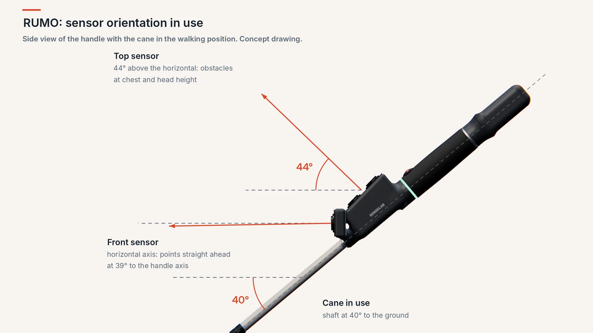

Obstacles at head height
Branches, signs and open lorry doors are out of a cane's reach. RUMO warns you in your hand, with time to react.
RUMO Smart Cane
RUMO is a white cane with extra senses. It detects obstacles ahead and at head height, keeps you walking in a straight line and calls for help with one button. All through vibration in the handle.
Our principle
A white cane is light, sturdy and never runs out of battery. RUMO keeps all of that. The safety features run on the cane itself and do not depend on a network or a phone. The phone only adds what needs it.
What RUMO does
Branches, signs and open lorry doors are out of a cane's reach. RUMO warns you in your hand, with time to react.
One press of the button locks your direction. Crossing a square or an avenue, the handle tells you which way to correct.
Hold the button down and your contacts get an alert with your location. If no one answers, the cane sounds a siren.
If it falls, it beeps until it is picked up. If it lies still on the ground, it asks whether you are all right before calling for help.
Two taps on the button and your phone describes what is in front of you out loud: people, cars, doors, the text on signs.
No plugs to line up. Rest the handle on the induction base at night and it is ready in the morning. It also charges over USB-C.
How it feels
Four motors, each with a single meaning. Where it vibrates tells you what. The rhythm tells you how far. Move the controls to try it.
For families and carers
Just once, over Bluetooth. The app was built from the ground up for screen readers.
Only the people the user invites can see alerts and location.
If help is needed, contacts get the alert on their phone in under 10 seconds.
Product
A complete white cane, with all the electronics in a light, balanced handle. The name says what it is for: rumo means course, and it helps you keep yours.
Explore in 3D
Turn the model, pick a point to see what it does, or switch to the inside view to see the electronics in the handle.
![The RUMO handle seen through a transparent shell, with its components labelled. At the front, the front sensor and the top sensor, both A02YYUW ultrasonic units, with the ESP32-S3 processor and the BNO085 motion sensor below. In the middle, the SOS button under the thumb and the four vibration motors: top, at the thumb; front, at the index finger; right, under the fingertips; left, in the palm. At the end, the 18650 battery along the axis, the USB-C port and the induction charging coil underneath.](../assets/rumo-2-en.webp)
Features
One sensor points ahead, the other upwards. The wide beam picks up railings, fences, thin poles and glass doors, and is not fooled by sunlight.
How it works →The cane remembers your direction and helps you hold it within ±10°. Near metal structures that upset the compass, it pauses and tells you, rather than guiding you wrongly.
Waterproof, under the thumb. Battery level, scene description, heading lock and SOS, without moving your hand.
An alert to your contacts, confirmation of who is coming, a siren on the cane and a one-tap call to 112 if no one answers.
The handle is designed to weigh no more than 200 g, with the weight close to the hand. A cane sweeps from side to side all day long.
IP54 protection against rain and dust, works from −10 to +45 °C, and a case built to take the knocks of normal use.
Specifications
| Detection ahead | Warning from 2.5 m (adjustable in the app). Sensor range 0.2 to 4.5 m. |
|---|---|
| Detection at head height | Warning from 1.5 m (adjustable in the app). |
| Response time | At most 0.3 s between an obstacle coming into range and the first vibration. |
| Feedback | 4 vibration motors in the handle and a buzzer. |
| Orientation | 9-axis motion sensor with compass. Heading lock within ±10°. |
| Phone connection | Encrypted Bluetooth 5 Low Energy. Android and iOS. |
| Battery | Lithium-ion, 3350 mAh. More than 16 hours of active use per charge. |
| Charging | Induction base included, or USB-C. Full charge overnight (about 9 h). |
| Durability | IP54 (splashes and dust). Use between −10 and +45 °C. |
| Handle weight | 200 g at most. |
| Accessibility | App compatible with VoiceOver and TalkBack. Web dashboard to WCAG 2.1 AA. |
RUMO is at the prototype stage. These are design targets, to be confirmed in user testing.
Keeps the camera facing forward, so you can ask for scene descriptions without letting go of the cane.
Coming next
Automatic warnings for crossings, steps and doors, without having to ask.
New motors that can point in in-between directions, using less power.
Works with any standard wireless charging pad.
Offline maps working together with the heading lock.
How it works
RUMO can be learned in a single half-hour session. No screens and no menus: everything goes through your hand.
Detection
The tip of the cane keeps reading the ground, as always. The two ultrasonic sensors in the handle take care of the rest: one points ahead, the other upwards, at the zone between waist and head.
We chose ultrasound over laser because the wide beam detects railings, fences and thin poles that a laser would slip past, and because it is not affected by sunlight or glass.
Geometry
When you walk, the cane sits at about 40° to the ground. The handle was designed around that position: the front sensor ends up level, looking straight ahead, and the top sensor rises 44° to catch what is at chest and head height.
That way the two beams cover different zones and do not overlap with what the tip of the cane already reads on the ground.

Vibration
Each motor sits in a different part of the hand and has a single meaning. If there is an obstacle ahead and another overhead, the pulses alternate so they never get mixed up.
| Motor | Where you feel it | What it means |
|---|---|---|
| Front | Index finger | Obstacle ahead |
| Top | Thumb | Obstacle at head height |
| Left | Palm | Correct your course to the left |
| Right | Fingertips | Correct your course to the right |
| All four | Whole handle | System warnings: connection lost, low battery, SOS countdown |
| Ahead | Overhead | Rhythm |
|---|---|---|
| Over 2.5 m | Over 1.5 m | No vibration |
| 2.5 to 1.5 m | 1.5 to 1.0 m | 1 pulse per second |
| 1.5 to 0.8 m | 1.0 to 0.6 m | 2 to 3 per second |
| 0.8 to 0.4 m | 0.6 to 0.3 m | 5 per second |
| Under 0.4 m | Under 0.3 m | Continuous |
Distances and intensity can be adjusted in the app. Obstacles always take priority over heading cues.
The button
A single waterproof button. SOS needs a long press and gives you five seconds to cancel, so it is never sent by mistake.
Gestures can be swapped in the app.
| Gesture | What it does |
|---|---|
| 1 tap | Battery level, spoken by the app or as a number of pulses |
| 2 taps | Scene description from the phone's camera |
| Press 1 s | Heading lock: on or off |
| Hold 3 s | SOS, with a 5 s countdown that another tap cancels |
| Cane dropped | Any tap stops the beeping and answers "I'm fine" |
Emergency
An alert starts from the button or from a possible fall: if the cane lies dropped and still for 45 seconds, it asks whether you are all right. With no answer within 30 seconds, it calls for help on your behalf.
The cane tells the app, which sends the help request with the last known location.
immediatelyA notification on each carer's phone and an alert on the dashboard, with the position on the map.
in under 10 sThe first to confirm takes charge. The others are informed and the app tells you: "help is on the way".
"I'll help"The cane sounds its siren to get the attention of people nearby, and the phone offers a one-tap call to 112.
safety netAll contacts are alerted at the same time. This is the default and is always used for a manual SOS.
For falls, it alerts one contact at a time, in the order you choose. For people who would rather bother one close person first.
Reliability
| If this happens | RUMO does this |
|---|---|
| The phone switches off or is out of range | Detection, vibration and heading lock keep working. The cane warns you with three long pulses, and carers are told if the connection does not come back. |
| SOS without a phone connection | The cane's siren sounds to get the attention of people nearby. The alert is stored and sent as soon as the connection returns. |
| Magnetic interference | Heading lock pauses and tells you, rather than giving wrong directions. It resumes on its own. |
| Low battery | A warning in the handle and in the app, well in advance. With no battery, it is still a white cane. |
| Too little light for the camera | The app says the image is too dark. Everything else works as normal. |
App and carers
The cane user gets an app with no maps or complicated screens, built for screen readers. Carers get a web dashboard with location and alerts.
RUMO app
Works fully with VoiceOver and TalkBack. There is no map: information is spoken.
Two taps on the cane and the camera identifies people, cars, chairs and text. It works offline and adds the distance measured by the cane.
Vibration strength, warning distances, button gestures and emergency contacts are all configurable.
Shared with carers every 5 minutes and with every alert. You can pause it whenever you like.
Carer dashboard
Opens in any browser, nothing to install. It shows the last location of the person you look after, receives alerts in real time and lets you confirm who is going to help.
Contacts and alert mode belong to the user. Carers can see them, but only the user can change them.
Privacy
Location, images and alerts are sensitive personal data. We handle the bare minimum, and only with your consent.
Location history is deleted after one day. Only the last known position is kept.
Photos taken for scene descriptions are processed on the spot and discarded.
A carer can only see your data once the user adds them in the app. Each alert is visible only to the people who were notified.
App data is hosted in the EU, under the GDPR.
Between the cane and the phone, and between the phone and the servers. Only the paired phone can connect to the cane.
About us
SenseLab develops electronic assistive devices for people with visual, hearing, motor or cognitive disabilities. We started with mobility for people who are blind or have low vision.
Mission
To promote safety and independence by building smart sensors into everyday objects.
Vision
A world where disability is no longer a barrier to free, intuitive mobility.
Values
We listened to blind and low-vision people before deciding what to build, and contacted ACAPO, the Portuguese association of the blind and partially sighted, to reach more.
Every feature has to solve a real problem without creating a new point of failure.
A cane gets rain, sun and knocks. Our products have to take them too.
Location is shared only with the people the user chooses. It is never sold.
What we heard
Cane users asked us for handles that do not tire the wrist, cases that survive the street, and help crossing open spaces. So we left out anything that added weight without adding safety, such as hand warming or health monitoring.
The weight sits close to the hand.
Rain, dust and knocks.
The essentials do not need a phone.
That is where heading lock came from.
The arcs in our symbol are detection waves: the way our products sense the world around the people who use them.
The name
Rumo is Portuguese for the course you choose to follow. That is what our cane protects: each person's freedom to decide where to go and to get there on their own.
Team
There are thirteen of us, studying Electrical and Computer Engineering at the University of Aveiro.
Sensors, power and handle design.
Firmware, apps and cloud platform.
Support
Answers to the most common questions, and ways to get in touch.
Frequently asked questions
Not for the essentials. Obstacle detection, vibration, heading lock, the sound to find the cane and the siren all work without a phone. Alerts to contacts, location and scene description need the app. If the connection drops, the cane warns you with three long pulses.
It was designed to be learned in a single 30-minute session: four vibration zones and five button gestures.
Yes. The handle is IP54 rated against splashes and dust, and the USB-C port has a rubber cap. It should not be submerged in water.
More than 16 hours of active use. When it has not moved for 5 minutes, the cane goes to sleep to save power and wakes up by itself when you pick it up. A full charge takes about 9 hours, so we recommend resting it on the base every night.
In this version, induction charging works with the included base. Alternatively, it charges with any USB-C cable. Qi compatibility is planned for a future version.
You have to hold the button for 3 seconds, and after that the cane runs a 5-second countdown with vibration. Any tap during that time cancels the request.
Only the contacts you choose in the app. You can pause location sharing whenever you like, and the history is deleted after 24 hours.
No. It complements white cane techniques. We recommend talking to an orientation and mobility instructor before you start using it.
RUMO is at the prototype stage and is not on sale yet. If you would like to hear about the launch or take part in user testing, write to us.
Contact
Do you use a cane, look after someone who does, or represent an organisation? We would like to hear from you.
Policies
How we handle your data, what the warranty covers and the rules for using our products and services.
This is an English translation for convenience. The Portuguese version is the reference text.
Last updated: November 2026
SenseLab processes personal data in line with the General Data Protection Regulation (GDPR). We collect only what is needed for the product to work, and we never sell data.
To send emergency alerts, show the location to authorised carers and keep the service running. Consent is given in the app and can be withdrawn at any time.
App data is stored on servers in the European Union. Some supporting services, such as sign-in, notifications and maps, are provided by global suppliers under EU standard contractual clauses.
You can ask for access to, correction, deletion or portability of your data, and object to its processing, by writing to our contact email. You can also lodge a complaint with the Portuguese data protection authority, the Comissão Nacional de Proteção de Dados (CNPD).
Last updated: November 2026
RUMO is a mobility aid that complements white cane techniques and orientation and mobility training. It does not replace the user's own attention or the emergency services.
Ultrasonic detection can miss very thin obstacles, surfaces that absorb sound, or obstacles in extreme conditions. Sending alerts depends on the phone's battery and network. If you are in immediate danger, call 112.
The user is responsible for keeping emergency contacts up to date and for inviting only trusted people to see their location.
Last updated: November 2026
RUMO carries the 3-year legal guarantee set out in Portuguese Decree-Law 84/2021 for goods sold to consumers. It covers manufacturing defects and does not cover damage from misuse, submersion or opening the handle.
For distance purchases, you have 14 days from receipt to return the product without giving a reason, as long as it is complete and in good condition.
Email us with a description of the problem. We will reply with the next steps and, if needed, collect the device.
Last updated: November 2026
RUMO is designed to the European standards that apply to radio equipment, hazardous substances and lithium batteries. The current prototype is not yet certified.
Last updated: November 2026
This site and the carer dashboard follow the WCAG 2.1 guidelines, level AA. The app works fully with VoiceOver and TalkBack. On this site you can enlarge the text and switch between light and dark themes, and body text uses a typeface designed for readers with low vision.
Found a barrier? Tell us by email. We will fix it as quickly as we can.
Last updated: November 2026
This site uses no advertising or tracking cookies. We only store, in your browser, the text size and theme preferences you choose.